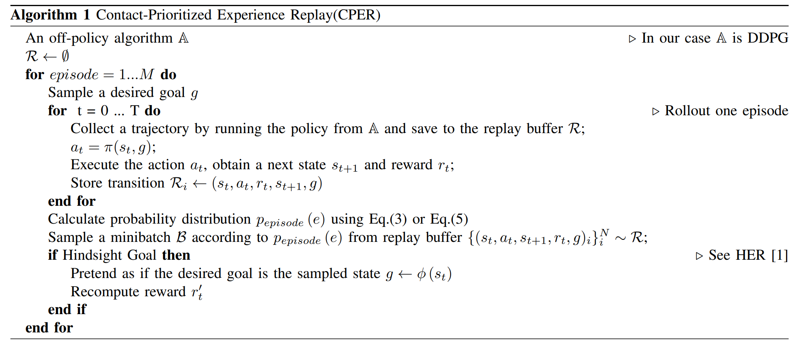
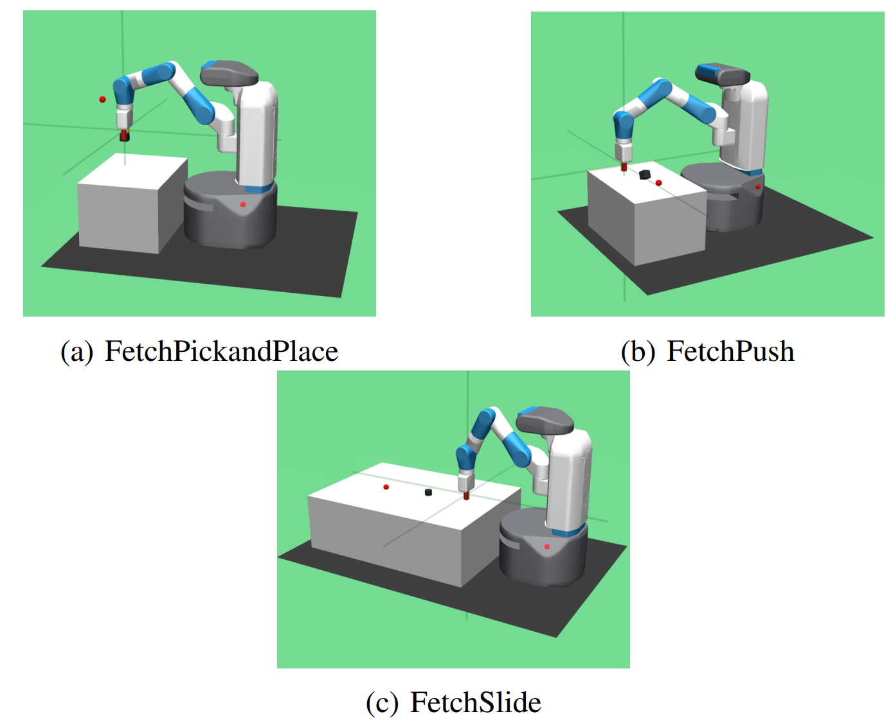
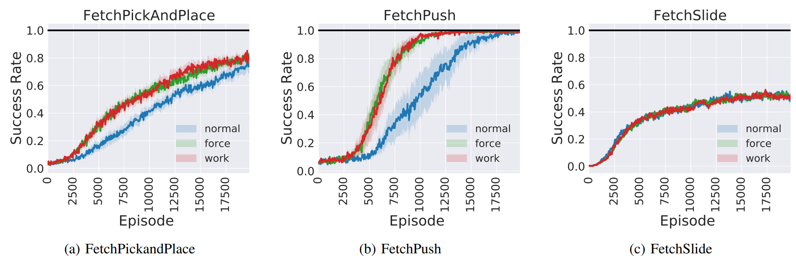

Multi-goal robot manipulation tasks with sparse rewards are notoriously difficult for reinforcement learning (RL) algorithms due to the extreme inefficiency in collecting successful experiences. While Hindsight Experience Replay (HER) expedites learning by substituting the desired goal with achieved goals from failed trajectories, standard HER samples transitions uniformly without distinguishing between informative physical interactions and idle, uninformative motions.
In this paper, we address the sample inefficiency of HER and introduce novel force-based and work-based hindsight experience prioritization mechanisms that leverage force/torque sensing in the robot's gripper. Contact-rich transitions—which carry the dense dynamics of manipulator-object interaction—are sampled with higher probability from the replay buffer. Extensive evaluations across challenging MuJoCo benchmarks and real-world Franka Emika Panda experiments demonstrate that our method dramatically accelerates learning and surpasses state-of-the-art baselines.
Prioritizes episodes based on cumulative contact force and mechanical work between gripper and object, focusing the policy on crucial manipulation events.
Replaces uniform sampling in HER with physically grounded probability distributions, reducing sample complexity across standard benchmarks.
Successfully transferred trained policies zero-shot to a physical 7-DOF Franka Emika Panda robot with ArUco marker computer vision tracking.
When an agent explores sparse-reward manipulation tasks, many sampled trajectories never contact the target object. Sampling these empty trajectories uniformly slows policy convergence. To resolve this, we formulate two metrics to calculate the episode sampling probability $p_{\text{episode}}(e)$:
Force sensors in the left and right gripper fingers measure net applied forces (Coriolis, centripetal, gravitational, and external contact forces). Gravitational forces are compensated using the gripper mass $mg$. The multidimensional force is projected to a scalar and cumulatively summed across timesteps:
The episode sampling distribution is given by:
Work-based prioritization incorporates end-effector displacement $\Delta x_i^{(j)}$ to differentiate between static resting forces and active spatial manipulation:

We evaluated the proposed method against vanilla HER and state-of-the-art baselines on standard 7-DOF manipulation tasks: Pick & Place, Push, and Slide across 7 random seeds.

Both force-based and work-based prioritization drastically accelerate learning speed and reach near-100% asymptotic success rate well before vanilla uniform HER:

The learned policies were directly transferred from simulation to a physical 7-DOF Franka Emika Panda robot. Perception was handled via overhead RGB camera sensing with ArUco fiducial markers for perspective transformation into the robot's base coordinate frame. Motion control commands were sent via the Frankx library, demonstrating robust pick, place, and pushing actions in the physical environment.
If you find this work, code, or data useful in your research, please consider citing our ICRA 2024 paper:
@inproceedings{sayar2024contact,
title = {Contact Energy Based Hindsight Experience Prioritization},
author = {Sayar, Erdi and Bing, Zhenshan and D'Eramo, Carlo and Oguz, Ozgur S. and Knoll, Alois},
booktitle = {IEEE International Conference on Robotics and Automation (ICRA)},
year = {2024},
pages = {Yokohama, Japan},
publisher = {IEEE}
}